Compute Resource
LLM 컴퓨트 리소스 관련 잡상식을 얻어가는 자료입니다.
목차
- 1. Kimi K3는 어떻게 미국 증시를 흔들었나?
- 2. 추론 시장으로의 전환
- 3. LLM을 쓰기 위해서는 얼마만큼의 메모리가 필요할까요?
- 4. KV캐시란 뭔가요?
- 5. LLM 모델의 연산: 프리필과 디코딩
- 6. 아키텍처 살펴보기
- 7. Quantization
- 8. AI 소버린
- 9. 부록: NVIDIA 데이터센터 GPU 로드맵
- 10. 참고 자료
1. Kimi K3는 어떻게 미국 증시를 흔들었나?
"거대 자본의 신화를 흔든 효율의 반격"
2026년 7월 16일, 중국 Moonshot AI가 세계인공지능대회(WAIC)에서 Kimi K3를 발표했습니다. 총 2.8조(2.8T) 파라미터, 896개 전문가 중 16개만 활성화하는 MoE 구조, 100만 토큰 컨텍스트, 그리고 새로운 Kimi Delta Attention(KDA) 아키텍처를 갖춘 모델입니다. 발표 직후 반도체 지수가 흔들렸는데, 이는 2025년 1월 DeepSeek-R1이 촉발했던 "딥시크 모먼트"와 패턴이 거의 똑같습니다.
발표 다음날인 7월 17일 프리마켓에서 나스닥 선물이 약 1~1.7%(매체별 편차 있음, 아래 각주 참고), S&P 500 선물이 약 0.8% 하락했고 NVDA는 2% 이상 밀렸습니다. 블룸버그 아시아 반도체 지수는 6% 넘게 빠졌습니다(대만 가권지수 TAIEX -6.5%, TSMC -7.3%도 같은 날 함께 확인됨). 2026년 6월 22일 이후로 누적하면 반도체 섹터 시가총액 약 3.3조 달러가 증발한 상태였는데, 이 흐름 자체는 Kimi K3 발표 이전부터 진행 중이던 밸류에이션 조정이지만 발표가 하락을 가속시켰다는 분석입니다[^tftc].
시장이 반응한 이유는 단순합니다. Kimi K3는 GPU 수출 규제로 최신 가속기를 구하기 어려운 환경에서, 구세대 GPU만으로 학습됐다고 알려져 있습니다. "최첨단 GPU 없이도 프론티어급 모델을 만들 수 있다"는 서사가 재확인되면, 빅테크의 초대형 GPU 구매 계획(capex)의 근거가 흔들립니다. Nvidia 매출은 결국 "AI를 하려면 우리 GPU가 필요하다"는 전제에 크게 의존하는데, 이 전제가 다시 한 번 도전받은 셈입니다.
전체 가중치 공개는 2026년 7월 27일로 예정되어 있어, 이 문서 작성 시점에는 공식 기술 리포트가 아직 나오지 않은 상태입니다. 아래 아키텍처 설명은 Moonshot 블로그와 커뮤니티 분석을 기준으로 정리했습니다.
그런데 "구세대 GPU로도 저렴하게, 그러면서도 뛰어난 모델을 만들었다"는 말이 정확히 무슨 뜻일까요? 모델을 어떻게 설계해야 적은 하드웨어로도 돌아가고, 반대로 하드웨어 스펙은 모델 설계에 어떤 제약을 거는 걸까요. 이 문서는 이 질문에 답하기 위해, 먼저 추론 비용이 왜 이렇게 중요해졌는지 (2장), LLM이 메모리를 얼마나 먹는지(3장)부터 차근차근 살펴봅니다.
2. 추론 시장으로의 전환
"만드는 시대를 넘어, 매일 쏟아내는 시대로"
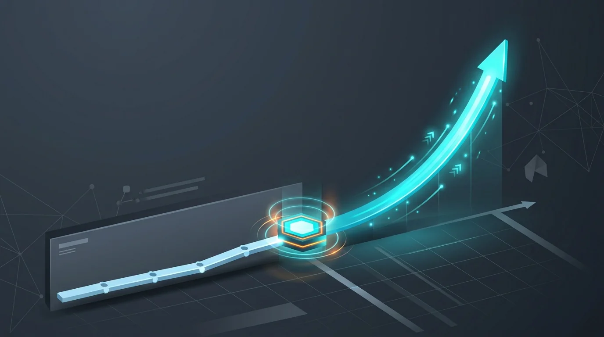
최근 몇 달 동안 AI 에이전트는 사내 문화를 크게 뒤흔들고 있습니다. 엘리베이터를 타도, 밥을 먹어도, 옆 부서에서도 AI 얘기로 가득합니다.
점점 더 많은 사람이 AI 에이전트를 활용하기 시작했고 토큰 소비량이 폭증하고 있습니다. 이미 사용하는 사람들도 날이 갈수록 더 많은 토큰을 소비합니다.
- 챗봇 → 에이전트로 판도가 바뀌며 토큰 사용량이 폭증했습니다.
- 에이전트 생산성 향상을 경험한 회사들이 앞다투어 온프레미스 토큰 프로덕션 환경을 구축하고 있습니다.
- 개인도 토큰 서빙을 위한 로컬 서빙 모델 구축을 시작했습니다. 애플 실리콘, DGX Spark 등이 품절 대란을 겪었습니다.
- 쓸 만한 모델을 돌릴 수 있는 GPU들의 가격이 폭등했습니다.
- 모델 사이즈가 점점 커지는 중이라 더 큰 메모리가 필요해지고 있습니다.
가격 폭등은 게이밍용과 로컬 AI 추론에 흔히 쓰이는 GPU 두 종류에서 모두 확인됩니다[^gpu-price].
3. LLM을 쓰기 위해서는 얼마만큼의 메모리가 필요할까요?
"가중치를 담고, 쌓이는 작업 내용까지 견뎌야 하는 공간"
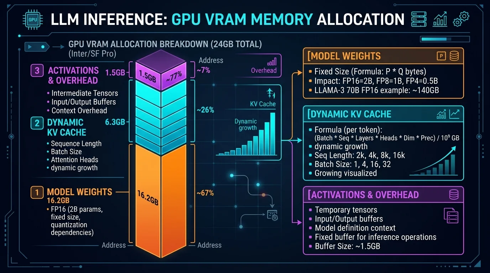
2026년 출시 모델 기준 파라미터 표입니다[^model-table].
| 모델 | 총 파라미터 | 국가 | 회사 |
|---|---|---|---|
| Qwen3.6 27B | 27B | 중국 | Alibaba (Qwen팀) |
| Qwen3.8 Max | 2.4T | 중국 | Alibaba (Qwen팀) |
| DeepSeek V4 Flash | 284B | 중국 | DeepSeek |
| DeepSeek V4 Pro | 1.6T | 중국 | DeepSeek |
| GLM 5.2 | 744B | 중국 | Zhipu AI (Z.ai) |
| Kimi K3 | 2.8T | 중국 | Moonshot AI |
| Hy3 | 295B | 중국 | Tencent (Hunyuan팀) |
| MiniMax M3 | 428B | 중국 | MiniMax |
| Laguna S 2.1 | 118B | 미국 | Poolside |
| Gemma 4 31B | 31B | 미국 | Google (DeepMind) |
| Motif 3 | 314B | 한국 | Motif Technologies |
| Mistral Medium 3.5 | 128B | 프랑스 | Mistral AI |
일반적으로 원본 모델은 16비트(BF16)로 배포됩니다. 가속기 세대별로 네이티브 가속이 되는 정밀도도 다릅니다.
- A 시리즈(암페어) - FP16 네이티브 가속 가능 (FP16 텐서코어 자체는 볼타부터 있었지만, 이 문서에서는 최근 세대 중 기준점으로 사용)
- H 시리즈(호퍼) - FP8 네이티브 가속 가능
- B 시리즈(블랙웰) - FP4 네이티브 가속 가능 (NVFP4)
원본 모델을 8비트로 압축했을 경우, 1B ≈ 1GB입니다. 보통 모델을 8비트로 단순 압축 시 출력 품질은 무손실 수준입니다. 작은 모델일수록 양자화에 약하고, 큰 모델일수록 강합니다.
예를 들어 GLM-5.2(744B) 기준, 141GB H200 8장이면 FP8 서빙이 가능합니다[^memory-calc].
하지만 이건 어디까지나 모델을 로드하는 데 필요한 메모리를 계산한 것뿐입니다. 실제로는 여러 오버헤드로 인해 추가 메모리를 필요로 하며, 그 중 가장 지배적인 건 KV캐시입니다.
4. KV캐시란 뭔가요?
"과거를 기억하기 위해 점점 넓어지는 작업 책상"
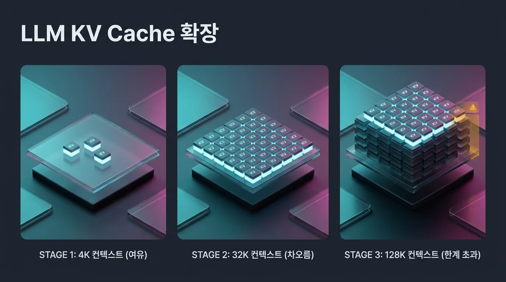
LLM 모델은 다음 토큰을 추론하기 위해, 지금까지 입력된 모든 토큰과의 관계를 연산해야 합니다. 따라서 이전 토큰을 처리한 결과값을 항상 테이블에 펼쳐둬야 합니다. 이런 이유 때문에 컨텍스트가 길어지면 일반적으로 KV캐시는 선형으로 증가합니다. 따라서 수십 GB의 중형 모델은 딱 그 정도의 메모리만 있으면 될 것 같지만, 컨텍스트가 길어지면 가중치를 초과하는 수준으로 KV캐시가 자라는 경우가 흔하고, 동시 요청을 처리해야 하는 경우에는 이 캐시 비용이 훨씬 더 빠르게 증가합니다.
KV캐시 크기는 대략 다음 공식으로 추정할 수 있습니다[^kv-formula].
$$ \text{KV 캐시(byte)} = 2 \times \text{batch} \times \text{seq len} \times \text{layer 수} \times \text{KV head 수} \times \text{head dim} \times \text{정밀도(byte)} $$
즉 "총 파라미터가 작다"는 것과 "KV캐시가 작다"는 것은 별개의 축이며, 최근 아키텍처 경쟁은 사실 이 KV캐시 축에서 벌어지고 있습니다[^kv-cache-opt].
5. LLM 모델의 연산: 프리필과 디코딩
"한꺼번에 삼키는 입력, 한 땀 한 땀 뱉어내는 출력"
LLM 모델의 연산은 크게 두 단계로 구분됩니다. 입력을 처리하는 프리필, 그리고 출력을 만드는 디코딩입니다. 근본적으로는 동일한 연산이지만 입력은 병렬 처리가 가능하므로 빠르고, 출력은 직렬로만 처리가 가능하기에 느립니다.
단적인 예로, 하나의 요청을 처리할 때, 프리필이 초당 수천 개의 토큰을 처리할 수 있다면 디코딩은 수십 토큰 정도에 머무릅니다. 따라서 1:1로 비교했을 때 디코딩이 추론 과정에서 압도적인 병목이 됩니다.
5.1 프리필
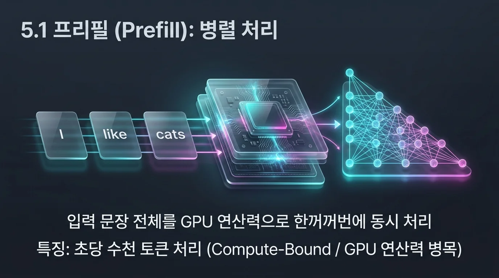
입력 문장 "I like cats"가 3개 토큰(I / like / cats)이라고 하면, 각
토큰이 자기 앞의 토큰들만 보고 계산한다는 규칙은 미리 다 정해져
있습니다. 그림으로 그리면 계단 모양입니다(X = "이 토큰을 본다").
I like cats
I X
like X X
cats X X X
입력 전체가 이미 손 안에 있으니, GPU는 이 계단 전체를 한 번에 계산합니다. 가중치를 메모리에서 딱 한 번만 읽고 그걸로 모든 토큰을 한꺼번에 처리하는 셈입니다. 그래서 프리필은 메모리를 읽는 속도보다 GPU의 순수 연산 속도가 더 중요합니다.
5.2 디코딩
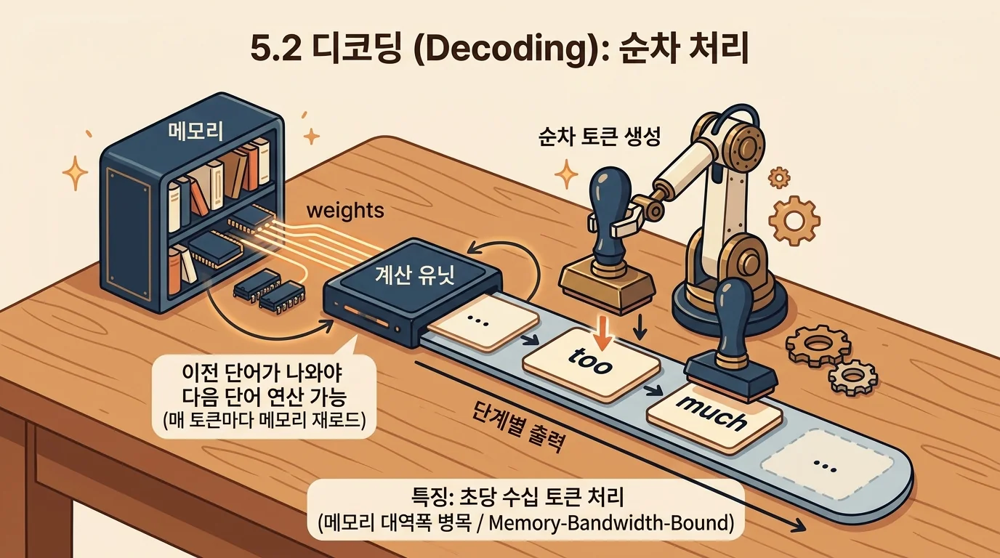
디코딩은 이 계단을 한 칸씩만 그려나가는 것과 같습니다. 모델이 "I like cats" 다음에 "too"를 출력한다고 해봅시다.
step 1: I like cats → "too" 계산
step 2: I like cats too → 다음 단어 계산
문제는, step 2를 시작하려면 step 1이 끝나서 "too"라는 단어가 실제로 나와 있어야 한다는 겁니다. 미리 계산해둘 수가 없습니다. 한 단어 → 한 단어, 딱 한 줄씩만 진행됩니다.
그래서 새 단어를 하나 만들 때마다 모델 전체를 처음부터 다시 메모리에서 읽어와야 합니다. 모델 사이즈가 100GB일 경우, 메모리 대역폭[^mem-bandwidth]이 500GB/s이라면 다음 토큰 연산을 위해 메모리를 읽는 데 0.2초가 필요합니다.
즉, 초당 5개의 토큰을 생성할 수 있습니다. 병렬 처리할 방법이 없기 때문에[^spec-decoding] 메모리 대역폭이 디코딩 성능을 좌우합니다.
그래서 최근 아키텍처들은 전부 이 디코딩 병목을 어떻게 낮추느냐를 놓고 경쟁합니다. MoE로 매 토큰마다 읽어야 하는 파라미터 양 자체를 줄이거나, KV캐시를 압축해서 메모리 대역폭 소모를 줄이는 두 방향이 대표적입니다. 아래에서 각 모델이 택한 구체적인 해법을 살펴봅니다.
5.3 KV 캐시 히트
"메모리가 충분하면 연산 병목조차 줄어든다"
지금까지는 디코딩이 압도적인 병목이라고 설명했지만, 컨텍스트가 길어질수록 프리필에 의한 병목도 무시할 수 없습니다. 에이전틱 코딩처럼 대화가 멀티턴으로 이어지는 환경에서는 컨텍스트가 빠르게 자라고, 프리필 연산량은 컨텍스트 길이의 제곱으로 늘어나기 때문입니다. 다행히 이 제곱 연산을 선형으로 줄여주는 기술이 있는데, 바로 KV 캐시 히트입니다.
KV 캐시 히트란 이전 턴에서 이미 계산해 둔 KV 캐시를 그대로 재사용하는 기법입니다. 멀티턴 대화에서는 새 턴이 와도 이전 대화 내용은 그대로이고 뒤에 새 입력만 덧붙는 경우가 많습니다. 이때 이전 턴에서 계산해 둔 앞부분의 KV 캐시를 저장해 두었다가 재사용하면, 새로 프리필해야 하는 구간은 방금 추가된 입력뿐입니다. 즉 컨텍스트 전체를 매번 제곱으로 다시 계산하는 대신, 새로 늘어난 부분만 선형으로 계산하면 됩니다.
이 덕분에 멀티턴 에이전트 환경에서는 프리필에 드는 연산 비용을 크게 아낄 수 있고, 그만큼 디코딩에 의한 병목이 상대적으로 더 두드러지게 됩니다.
아래 그래프는 턴이 늘어날수록 프리필에 드는 누적 연산량이 캐시 히트 유무에 따라 얼마나 달라지는지 보여줍니다. 매 턴 새로 추가되는 입력이 1이라고 하면, 캐시가 없을 때는 매번 지금까지 쌓인 컨텍스트 전체를 처음부터 다시 계산해야 하므로 턴별 비용이 1, 2, 3, 4, 5로 늘고 이를 누적하면 1, 3, 6, 10, 15로 제곱형 곡선을 그립니다. 반면 캐시 히트가 있으면 매 턴 새로 추가된 1만 계산하면 되므로 누적 비용도 1, 2, 3, 4, 5로 완전한 직선을 그립니다. 5턴이 지났을 때 총 비용이 15 대 5, 즉 3배 차이가 나는 셈입니다.
이 병목 구조는 실제 API 가격 정책에도 그대로 드러납니다. Anthropic, OpenAI 등 대부분의 회사는 출력(디코딩) 토큰 가격을 입력(프리필) 토큰 가격보다 5배가량 비싸게 책정합니다. 병렬로 한 번에 처리되는 프리필과 달리, 디코딩은 토큰 하나마다 모델 전체를 메모리에서 다시 읽어야 하니 GPU 입장에서 훨씬 비싼 연산이기 때문입니다. 그리고 캐시 히트가 일어난 입력 토큰은 가격을 90% 할인해줍니다 — 이미 계산해 둔 KV 캐시를 재사용할 뿐 프리필 연산 자체가 거의 필요 없으니, 실제 비용도 그만큼 줄어드는 게 당연합니다.
6. 아키텍처 살펴보기
6.1 DeepSeek R1 - Mixture of Experts (MoE)
"거대한 도서관, 그 중 당장 필요한 책만"
2025년 1월, DeepSeek R1이 출시되며 미국 증시가 뒤흔들렸습니다("딥시크 모먼트"). 반도체 칩 제재로 열악한 환경에서 미국의 프론티어 모델들과 비견되는 추론 모델을 발표했기 때문입니다.
인프라 투자에 천문학적 금액을 쏟아붓지 않아도 고성능 모델을 만들 수 있는 게 아닌가, 사람들이 의심하게 된 거죠. 심지어 R1은 비슷한 사이즈의 모델보다 추론 속도가 압도적으로 빨랐습니다.
R1은 별도 아키텍처가 아니라 DeepSeek-V3의 구조를 그대로 이어받아 강화학습으로 추론 능력을 얹은 모델입니다. 그리고 이 빠른 추론 속도의 비밀은 V3에서 물려받은 Mixture of Experts(MoE) 구조에 있습니다[^moe-history]. MoE란 전체 파라미터 중 일부만 사용하는 기법으로, 다음 토큰을 출력할 때 모델이 입력을 보고 어떤 전문가를 활성화할지 선택한 후 해당 전문가만 활성화합니다.
실제 수치로 보면 DeepSeek-V3/R1(671B 총 파라미터, 37B 활성 파라미터)은 활성 파라미터가 총 파라미터의 약 5.5%에 불과합니다.
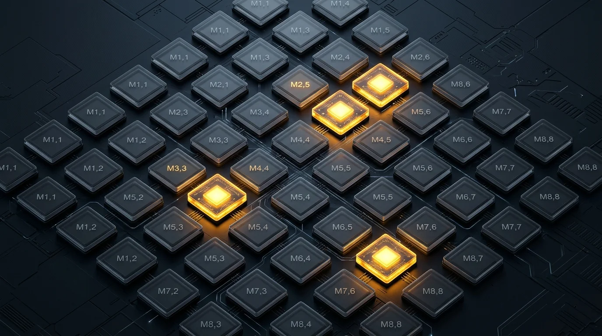
그래서 왜 빠른가요?
MoE의 이 "활성 파라미터만 쓴다"는 특성은 앞서 다룬 디코딩 병목에 직접 효과를 냅니다. 디코딩은 매 토큰마다 파라미터를 메모리에서 다시 읽어야 하는데, MoE는 그 읽어야 할 양 자체를 활성 파라미터 비율만큼 줄여줍니다. Dense 671B 모델이라면 매 토큰마다 671B를 통째로 읽어야 하지만, DeepSeek-V3/R1은 37B만 읽으면 됩니다 — 디코딩 속도가 이론상 671/37 ≈ 18배 빨라지는 셈입니다.
프리필에도 같은 라우팅이 적용되므로 총 연산량(FLOPs)이 줄어드는 이득이 있지만, 디코딩만큼 순수하게 반영되지는 않습니다. 프리필은 원래 GPU의 연산 능력(compute)이 지배적인 단계인데, Dense 모델은 전체 시퀀스를 하나의 큰 행렬곱(GEMM)으로 처리해 GPU 효율을 거의 최대로 뽑아냅니다. MoE는 이걸 토큰마다 다른 전문가로 흩어 보내는 구조로 바꾸는데, 전문가 하나에 배정되는 토큰 수가 적으면(짧은 프롬프트·작은 배치일수록) 개별 행렬곱이 작아져 GPU 활용률이 떨어지고, 토큰을 전문가별로 모으고 다시 원래 순서로 되돌리는 라우팅 오버헤드도 붙습니다. 시퀀스가 길거나 배치가 커지면 전문가별 행렬곱도 커져서 이 비효율은 줄어듭니다. 정리하면, MoE는 프리필도 이론적으로는 빠르게 하지만 그 이득이 디코딩만큼 온전히 실현되지는 않고 배치/시퀀스 길이에 좌우됩니다.
6.2 Qwen3-Next-80B-A3B - Gated DeltaNet
"왜 전부 다 적어? 요약해"
Qwen3-Next-80B-A3B(총 80B/활성 3B)는 48개 레이어를 4개씩 묶어, 3개는 Gated DeltaNet(선형 어텐션), 1개는 Gated Attention(GQA, Q 16개/KV 2개 헤드, head_dim 256)으로 구성합니다. 즉 대부분의 레이어가 시퀀스 길이에 선형으로 스케일링되는 연산을 쓰고, 4개 중 1개만 기존 방식의 이차(quadratic) 연산을 유지해서 품질(장기 의존성 포착)과 효율(연산량/ KV캐시) 사이에서 균형을 잡습니다.
왜 Gated DeltaNet은 KV캐시가 필요 없나요?
Full Attention은 매 토큰마다 지금까지 나온 모든 토큰과 다시 내적을 계산해야 합니다. 그래서 두 가지가 동시에 늘어납니다 — 내적 대상인 과거 토큰의 K/V를 전부 저장해둬야 하니 메모리(KV캐시)가 컨텍스트 길이에 비례해 늘고, N번째 토큰을 계산할 때마다 그 앞의 N-1개 토큰과 매번 다시 내적해야 하니 토큰 하나 만드는 데 드는 연산량도 컨텍스트 길이에 비례해 늘어납니다(그래서 전체 연산량은 길이의 제곱, 5.3절 참고).
Gated DeltaNet은 이 방식 대신 RNN처럼 토큰을 하나씩 순서대로 처리하며,
head_dim × head_dim 크기의 고정된 "상태(state)" 행렬 하나만 계속
업데이트합니다. 이 state 하나가 메모리와 연산량을 동시에 고정시킵니다
— 크기가 고정이니 저장할 메모리도 고정이고, 매 토큰마다 하는 일도
"이 고정 크기 state를 한 번 업데이트"뿐이라 상수 시간입니다. 그래서
토큰 하나당 연산량이 컨텍스트 길이와 무관하게 일정하고, 전체
연산량도 O(n) — 그래서 "선형 어텐션"이라 부릅니다.
이름의 "Delta"는 그냥 누적하는 게 아니라 "고쳐 쓰는" 방식이라는 뜻입니다. 순수 선형 어텐션은 outer product를 그냥 계속 더하지만
$$ S_t = S_{t-1} + v_t k_t^\top $$
DeltaNet은 새 값을 쓰기 전에 같은 키로 이미 저장된 옛 값을 먼저 지우고 그 자리에 새 값을 씁니다
$$ S_t = S_{t-1}(I - \beta_t k_t k_t^\top) + \beta_t v_t k_t^\top $$
이건 매 스텝마다 연상 기억의 오차를 줄이는 온라인 경사하강 한 스텝과 같아서, 단순 누적보다 정보 검색(retrieval) 성능이 좋습니다. Gated DeltaNet은 여기에 Mamba-2 스타일 감쇠(decay) 게이트를 더해서 오래된 정보를 능동적으로 잊게 만듭니다 — 그래서 "Gated"입니다.
단, 컨텍스트 길이에 비례한 메모리 증가가 완전히 없어지는 건 아닙니다. Qwen3-Next-80B-A3B에서 실제로 컨텍스트 길이에 비례해 커지는 KV캐시는 48개 레이어 중 Gated Attention 12개 레이어의 것뿐입니다. 나머지 36개 DeltaNet 레이어는 각자 고정 크기 상태만 유지하므로 컨텍스트 길이와 무관합니다. 비유하면, DeltaNet 레이어는 그 시점까지의 과거를 고정 크기로 압축한 요약을 들고 있고, Attention 레이어는 그 시점에서 과거 토큰 하나하나에 정확히 접근할 수 있는 원본 기록(KV캐시)을 들고 있는 셈입니다. 전체 모델의 KV캐시는 이 12개 레이어분만 존재하므로, 48개 레이어 전체가 Full Attention인 모델보다 약 1/4 수준으로 줄어듭니다 (완전히 0이 되는 건 아닙니다).
이후 나온 Qwen3.6 계열은 Dense(27B 전량 활성)와 MoE(35B-A3B, 35B 중 3B 활성) 버전을 함께 내놓아, 같은 하이브리드 어텐션 구조 위에서 Dense와 MoE를 직접 비교하기 좋은 사례입니다.
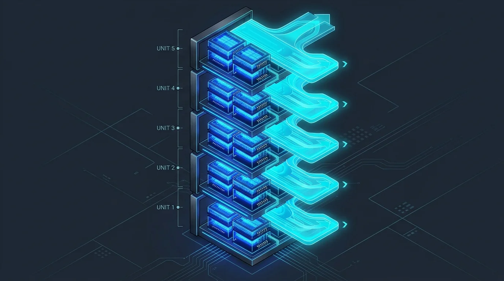
6.3 DeepSeek V4 - Hybrid Attention (CSA + HCA)
"이거보다 더 싸게 만들 수 있어?"
DeepSeek-V4는 Compressed Sparse Attention(CSA)과 Heavily Compressed Attention(HCA)을 함께 쓰는 하이브리드 구조를 도입했습니다. 둘 다 "과거 토큰을 몇 개씩 묶어 요약본 하나로 압축한다"는 아이디어를 공유하지만, 압축 강도와 그 이후 보는 방식이 다릅니다. 책 한 권을 다시 읽어야 하는 상황에 비유하면:
- CSA: 페이지 4장을 한 장짜리 요약으로 압축해 둔 다음, 그 요약본들 중에서 지금 필요할 것 같은 몇 개만 골라(sparse) 자세히 읽습니다. 압축은 약하게, 선택은 좁게 하는 방식입니다.
- HCA: 훨씬 더 세게 압축해서(책 한 챕터를 한 문장으로) 요약본 개수 자체를 확 줄여버립니다. 대신 남은 요약본 수가 적으니, 골라 읽지 않고 전부(dense) 다 읽어도 부담이 없습니다.
즉 CSA는 "많이 남기고 그중 일부만 보기", HCA는 "적게 남기고 전부 보기"로 서로 다른 지점에서 균형을 잡는 셈입니다. DeepSeek-V4는 이 둘을 레이어마다 섞어 씁니다. Pro 모델 기준으로 V3.2 대비 100만 토큰 컨텍스트에서 토큰당 추론 FLOPs는 27%, KV캐시는 10% 수준까지 줄었다고 밝혔습니다(Flash에도 동일 비율이 적용되는지는 원문에 명시되지 않았습니다). 여기에 Manifold-Constrained Hyper-Connections(mHC, 잔차 연결 안정화)와 Muon 옵티마이저(학습 안정성/수렴 속도 개선)를 더했습니다. Flash(284B 총/13B 활성)와 Pro(1.6T 총/49B 활성) 두 버전이 있습니다.
이렇게 아낀 연산·메모리는 실제 API 가격에도 그대로 드러납니다[^ds-v4-pricing].
| 모델 | 입력(캐시 미스) | 캐시 히트 | 출력 |
|---|---|---|---|
| V4 Flash | $0.14 | $0.0028 | $0.28 |
| V4 Pro | $0.435 | $0.003625 | $0.87 |
(1M 토큰당, USD)
캐시 히트 가격은 출력 대비 100배(Flash) ~ 240배(Pro) 저렴한 수준입니다. 이렇게까지 저렴할 수 있는 이유는 캐시 히트가 정말 메모리를 거의 소비하지 않기 때문입니다 — 이미 계산해 둔 KV캐시를 그대로 재사용할 뿐이라 새로 읽어야 할 메모리가 거의 없고, 5.3절에서 설명한 것처럼 프리필 연산 자체도 새로 추가된 부분만큼만 필요합니다.
6.4 Kimi K3 - Kimi Delta Attention (KDA)
Kimi K3는 세 가지 새 요소를 조합합니다.
- Kimi Delta Attention(KDA): Gated DeltaNet과 같은 원리로, 과거 전체를 고정 크기 요약 노트 하나로 압축해 시퀀스 길이에 선형으로 스케일링합니다. 100만 토큰 컨텍스트에서 디코딩을 최대 6.3배 가속한다고 발표. 다만 이 요약 노트 방식은 "이전 대화를 그대로 캐시해 재사용"하는 기존 prefix caching과 충돌해, Moonshot이 직접 vLLM에 KDA용 캐싱 구현을 기여했습니다.
- Attention Residuals: 옆 레이어가 아니라 몇 단계 전 레이어가 만든 표현을 필요할 때 다시 꺼내 씁니다. 매번 새로 메모하는 대신, 전에 써둔 메모 중 필요한 것을 골라 다시 보는 셈입니다. 구조 자체는 서빙 시에도 그대로 쓰이지만, Moonshot이 밝힌 수치는 학습(training) 단계 기준으로 학습 효율을 약 25% 끌어올리면서 추가 연산 비용은 2% 미만이라는 내용입니다.
- Stable LatentMoE: 896개 전문가 중 16개만 활성화하는 초고희소 MoE. Quantile Balancing은 "상위 몇 %까지 뽑는다"는 등급 컷을 라우터 점수 분포에서 바로 정하는 방식으로, 지원자 수(점수 분포)가 매번 달라져도 합격선을 자동으로 다시 긋는 것과 비슷합니다. 이 덕분에 기존처럼 민감한 보조 손실 하이퍼파라미터를 튜닝할 필요를 없앴습니다.
그 외에도 Per-Head Muon(헤드별 독립 옵티마이저), SiTU, Gated MLA를 함께 써서 K2 대비 약 2.5배의 스케일링 효율을 얻었다고 발표했습니다(이 구체적 배수는 marktechpost 등 2차 보도에서는 확인되지 않아, Moonshot 자체 발표 수치로만 남겨둡니다 — 원문 공개 시 재검증 필요).
서빙 관점에서 더 중요한 지점은, K3가 Supervised Fine-Tuning (SFT)[^sft] 단계부터 Quantized Aware Training (QAT)[^qat]를 거쳐 가중치는 MXFP4, 활성값은 MXFP8로 네이티브 배포된다는 점입니다. 사후 PTQ보다 품질 저하가 작을 것으로 기대되며, Moonshot은 서빙에 가속기 64장 이상의 슈퍼노드 구성을 권장합니다.
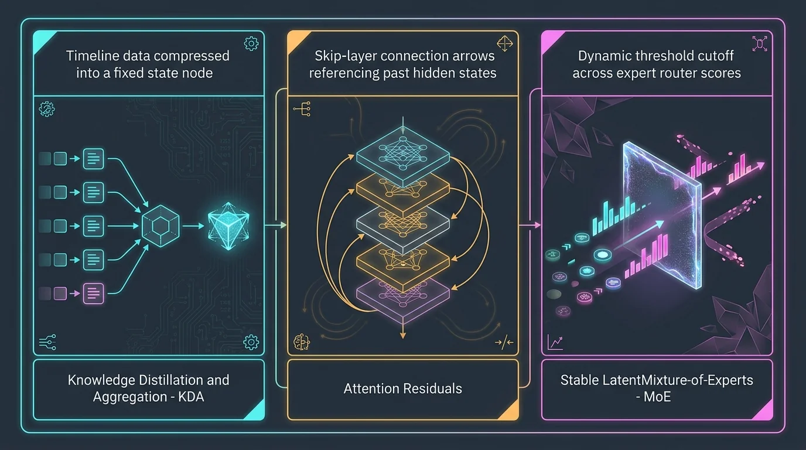
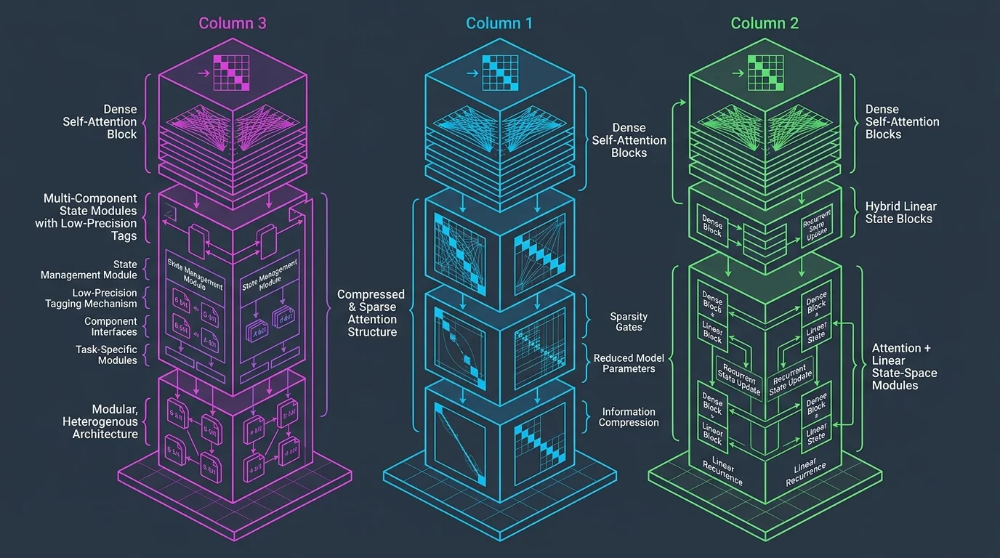
7. Quantization
7.1 Model 양자화
균일 양자화 (모델 전체를 같은 비트로):
- BF16 / FP16: 원본 배포 정밀도. 지수부 비트 수만 다릅니다 (BF16이 더 넓은 다이나믹 레인지, FP16이 더 높은 정밀도).
- FP8 (E4M3/E5M2): 호퍼(H100/H200)부터 네이티브 가속. 대부분 무손실급 품질.
- FP4 계열: 블랙웰부터 네이티브 가속.
- MXFP4: OCP(Open Compute Project) 표준. 블록 크기 32, 스케일 factor는 E8M0(8비트 지수). GPT-OSS가 이 포맷으로 배포되며 대중화됐고, 가중치만 양자화(weight-only)하면 암페어 GPU에서도 구동은 가능합니다(단, 암페어·호퍼는 FP4 텐서코어가 없어 네이티브 가속이 아니라 에뮬레이션 방식이며, 네이티브 가속은 앞서 설명한 대로 블랙웰부터 유효합니다).
- NVFP4: NVIDIA 자체 포맷. 블록 크기 16(더 촘촘), 스케일 factor는 FP8 E4M3(더 정밀). 같은 4비트여도 MXFP4보다 오차가 작다고 보고되지만, 네이티브 가속은 블랙웰 전용입니다.
위 블록 크기·스케일 포맷 수치는 NVIDIA 공식 기술 블로그("Introducing NVFP4 for Efficient and Accurate Low-Precision Inference", developer.nvidia.com, 직접 fetch 확인)의 비교표 기준입니다.
위 두 FP4 포맷은 보통 학습이 끝난 모델에 사후(post-training)로 적용됩니다. 반면 Kimi K3는 Supervised Fine-Tuning (SFT) 단계부터 Quantized Aware Training (QAT)로 MXFP4/MXFP8 정밀도에 맞춰 학습해 품질 저하를 더 줄이는 접근을 씁니다(Kimi K3 아키텍처 섹션 참고).
저비트 보정/캘리브레이션 기법 (전체는 여전히 균일한 비트지만, 어떤 채널을 더 정확히 보존할지 스케일링·최적화로 정확도를 끌어올리는 방식 — 아래 두 방법 모두 결과물은 예컨대 INT4처럼 균일한 비트입니다):
- AWQ(Activation-aware Weight Quantization): 활성값 크기를 기준으로 중요한 가중치 채널을 찾아 그 채널만 스케일을 보정, 나머지를 4비트로 눌러도 손실을 최소화합니다.
- AutoRound: 인텔이 낸 방법으로, 블록 단위로 라운딩 값 자체를 최적화해서 캘리브레이션 오차를 줄입니다. Qwen3.6-27B 커뮤니티 INT4 양자화에도 실제로 쓰이고 있습니다.
혼합 정밀도 (레이어마다 실제 비트 수 자체가 다름 — 위 두 방법과는 범주가 다릅니다):
- Unsloth Dynamic 2.0: 레이어별 민감도를 측정해서, 민감한 레이어는 높은 비트로 남기고 나머지(주로 MoE 전문가 FFN)는 최대한 눌러 평균 비트를 낮추는 방식. DeepSeek V3.1을 평균 3비트로 눌러도 원본급 벤치마크를 유지했다고 보고됐습니다.
7.2 KV 캐시 양자화 (균일 양자화만 존재)
KV캐시는 모델 가중치와 달리 매 요청마다 새로 생성되는 데이터라, 레이어별로 다른 비트를 미리 정해두는 혼합 정밀도 방식이 자리잡지 못했고 균일 양자화만 씁니다.
- 단순 양자화: per-tensor/per-channel INT8·INT4. 구현은 쉽지만 K/V에 낀 이상치(outlier) 채널 때문에 4비트 이하로 내리면 품질이 급격히 무너집니다.
- QuaRot (회전 기반 양자화): 양자화 전에 하다마드(Hadamard) 회전을 곱해 이상치를 여러 채널로 분산시킨 뒤 양자화합니다. 가중치·활성값· KV캐시를 통째로 4비트(W4A4KV4)까지 내려도 정확도 99% 이상을 유지한다고 보고됐습니다.
- TurboQuant (Google Research, arXiv:2504.19874, ICLR 2026): 벡터를 회전시킨 뒤 각 좌표가 베타 분포를 따른다는 성질을 이용해 좌표별 최적 Lloyd-Max 양자화기를 설계하고, 여기에 1비트 Johnson-Lindenstrauss(QJL) 보정을 더해 내적(attention score) 계산의 편향을 없앱니다. 논문에 따르면 채널당 3.5비트에서는 품질 손실이 없고, 2.5비트까지 내려도 손상이 미미합니다.
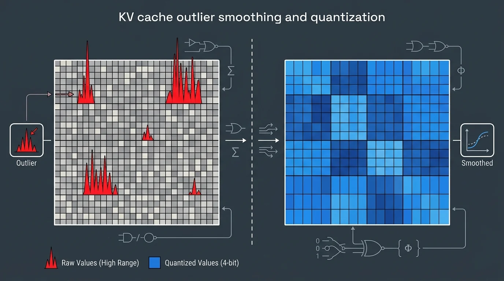
7.3 그래서 양자화하면 뭐가 좋나요?
양자화는 이 문서에서 계속 다룬 프리필/디코딩 병목 구조에 세 가지 방향으로 직접 이득을 줍니다.
- 연산 자체가 빨라집니다. FP8·MXFP4·NVFP4처럼 GPU가 네이티브로 가속하는 포맷이라면, 같은 텐서코어로 더 많은 연산을 동시에 처리할 수 있습니다. 프리필처럼 연산량(compute)이 지배적인 단계에서 특히 체감됩니다.
- 메모리 사용량이 줄어 디코딩이 빨라집니다. 디코딩은 매 토큰마다 모델 전체를 메모리에서 다시 읽어야 하는 메모리 대역폭 병목[^mem-bandwidth] 이었죠. 가중치를 16비트에서 4비트로 낮추면 읽어야 할 바이트 수가 1/4로 줄어드니, 같은 대역폭으로 더 짧은 시간에 다 읽을 수 있고 — 곧 초당 생성 가능한 토큰 수가 늘어납니다.
- KV캐시가 줄면 동시성이 늘어납니다. KV캐시 양자화(7.2)로 캐시가 차지하는 메모리가 줄면, 같은 GPU 메모리로 더 많은 요청의 KV캐시를 동시에 올려둘 수 있습니다. 즉 배치 크기(동시에 처리하는 요청 수)를 키울 수 있어, 서버 전체의 처리량(throughput)이 늘어납니다.
8. AI 소버린
"더 이상 AI는 모두의 것이 아니라, 각자 자신의 것을 만들어야 하는 국가 전략자산이 되었다"
8.1 국가 단위의 AI 소버린
지금까지 살펴본 모델·아키텍처 이야기는 결국 "GPU가 부족한 환경에서도 어떻게 쓸 만한 모델을 만드느냐"는 질문으로 돌아옵니다. 그리고 이 질문 자체가 순수한 기술 문제가 아니라 국가 간 규제와 대응의 결과라는 게 이 장의 주제입니다.
미국의 GPU 수출 규제: 미국은 프론티어급 GPU(Blackwell 계열)의 중국 수출을 막고 있고, 그보다 낮은 성능의 H20이나 성능을 깎은 H200도 케이스별 라이선스와 관세를 거쳐야만 통과됩니다. 2025년 5월에는 전 세계를 3단계로 나눠 접근을 차등화하려던 "AI Diffusion Rule"이 폐기되고, 대신 국가별 개별 협상 방식으로 바뀌었습니다 — UAE·사우디처럼 미국과 우호적인 국가는 대량의 최신 GPU를 확보하는 반면, 그렇지 못한 국가는 접근이 불투명해지는 구조입니다.
중국의 대응 — 자국산 칩과 자국산 모델: 수입이 막히자 중국은 Huawei의 Ascend 칩(910C, 950 시리즈)으로 자국 내 학습·추론 인프라를 자체 조달하는 방향으로 움직였습니다. 이 문서에서 다룬 DeepSeek·Kimi· Qwen·GLM 등 중국 오픈웨이트 모델들이 하드웨어 제약 속에서 연산량· 메모리를 극단적으로 아끼는 아키텍처(MoE, 선형 어텐션, KV캐시 압축, 네이티브 저비트 양자화)를 발전시켜온 배경이 바로 여기 있습니다 — "싸게, 그러나 뛰어나게"[^ai-sovereign]는 애초에 선택이 아니라 제재 환경이 강제한 방향이었던 셈입니다.
모델 자체도 전략 자산이 됩니다: 2026년 7월, 로이터는 중국 정부가 Alibaba·ByteDance·Z.ai(Zhipu) 등과 만나 자국의 최신 AI 모델(공개 예정 오픈웨이트 모델 포함)의 해외 접근을 제한하는 방안을 논의했다고 보도했습니다. 아직 확정된 규제는 아니지만, "가장 앞선 모델은 국내 전용으로 묶어두고 그보다 뒤처진 모델만 공개한다"는 계층화 방안이 검토되고 있습니다. 미국도 마찬가지로 특정 프론티어 모델의 배포를 국가안보 사유로 일시 중단하거나, 신뢰할 수 있는 기관에만 접근을 허용하는 조치를 취한 바 있습니다. 즉 GPU 수출을 막는 것과 마찬가지로, 이제는 모델(가중치) 자체의 국외 유출도 통제 대상이 되고 있습니다.
결국 하드웨어(GPU 수출 규제) → 모델 설계(제약 속 최적화) → 모델 그 자체(배포 통제)까지, AI를 둘러싼 통제의 범위가 계속 넓어지고 있습니다. 자국 GPU도, 자국 모델도 없는 국가는 이 흐름에서 점점 더 불리한 위치에 놓이게 되며, 이것이 "모든 나라가 자기 자신의 AI를 만들어야 하는 시대"라는 이 장의 문장으로 이어집니다.
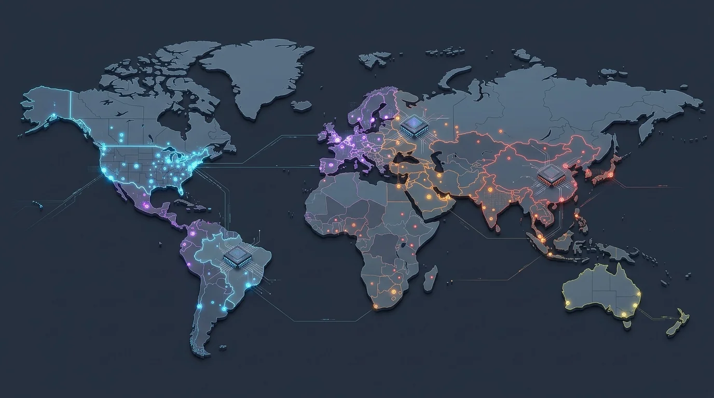
8.2 개인이 소유한 AI
같은 논리를 국가 단위에서 개인 단위로 좁혀도 방향은 똑같습니다. 2장에서 다뤘듯 개인도 애플 실리콘·DGX Spark 같은 로컬 서빙 하드웨어를 품절 대란 속에 사들이고 있는데, 이건 단순히 API 비용을 아끼려는 움직임이 아닙니다. 내 대화 기록, 내 파일, 내 업무 맥락을 계속 담아 두고 나만을 위해 돌아가는 개인 비서(자비스)를 누구나 필요로 하게 될 거라는 예상 때문입니다 — 그리고 그런 비서를 외부 서버가 아니라 내가 소유한 하드웨어 위에서 돌리고 싶다면, 결국 개인 차원의 소버린 문제와 마주하게 됩니다.
문제는 국가와 달리 개인은 자체 칩을 설계할 수 없다는 점입니다. 그래서 개인의 AI 소버린은 국가 간 GPU 배분(어느 나라가 얼마나 많은 GPU를 확보하느냐)과, 모델을 얼마나 적은 하드웨어로 돌릴 수 있게 설계하느냐(이 문서에서 계속 다룬 MoE·선형 어텐션·양자화)에 그대로 종속됩니다. 즉 "우리 모두에게 자비스가 필요하다"는 요구가 현실이 되려면, 국가 단위의 자립 경쟁과 모델의 경량화 경쟁이 먼저 해결돼야 하는 셈입니다.
그리고 이 모든 흐름 — 국가마다 자국 모델, 개인마다 자기만의 상시 비서 — 은 결국 토큰 소모를 지금보다 훨씬 더 가속화합니다. 이 문서 2장에서 다룬 토큰 사용량 폭증은 끝이 아니라 시작이었던 셈이고, 그만큼 더 많은 전력·GPU·메모리가 필요해질 가능성이 높습니다.
9. 부록: NVIDIA 데이터센터 GPU 로드맵
Nvidia는 세대를 과학자 이름으로 명명합니다: Hopper → Blackwell → Rubin → Feynman. 이 문서 본문에서 쓴 H200/B300은 각각 Hopper/Blackwell 세대입니다.
| 세대 | 시기 | 공정 | 메모리 | 대역폭 | 비고 |
|---|---|---|---|---|---|
| H100 | 2022 | TSMC 4N | HBM3 80GB | 3.35TB/s | |
| H200 | 2024 | TSMC 4N | HBM3e 141GB | 4.8TB/s | 이 문서 메모리 계산에 쓴 세대 |
| B200 (Blackwell) | 2024 | TSMC 4NP | HBM3e 192GB | 8TB/s | 일부 소스는 180GB로도 표기[^b200-mem] |
| B300 (Blackwell Ultra) | 2025 | TSMC 4NP | HBM3e 288GB | 8TB/s | 이 문서 메모리 계산에 쓴 세대 |
| Rubin R100 | 2026 | TSMC N3 | HBM4 288GB | 22TB/s | Vera CPU와 페어링 |
| Rubin Ultra | 2027 | TSMC N3 refine | HBM4 확장 | - | 밀도 향상, 테이프아웃 단계 |
| Feynman | 2028 | TSMC A16(1.6nm) | 커스텀 HBM(1TB+ 보고) | - | 3D 다이 스태킹, 광 NVLink, LP40 LPU |
9.1 Vera Rubin 플랫폼
Rubin은 GPU 단독이 아니라 "Vera CPU + Rubin GPU" 통합 플랫폼으로
출시됩니다. Grace Blackwell(GB200)과 같은 명명 패턴입니다. 미국
천문학자 베라 루빈(암흑물질 증거 발견)의 이름을 땄습니다. Vera Rubin
NVL72는 2026-06-01 GTC 타이베이에서 양산 개시가 발표됐고, 아래 표는
NVIDIA 공식 스펙 페이지(nvidia.com/en-us/data-center/vera-rubin-nvl72)를
직접 fetch해서 확인한 수치입니다.
| 구성 단위 | GPU 메모리·대역폭 | NVFP4 추론 | NVLink |
|---|---|---|---|
| Rubin GPU 1개 | HBM4 288GB / 22TB/s | 50 PFLOPS | 3.6TB/s (6세대) |
| Vera Rubin Superchip (Vera CPU 1 + Rubin GPU 2) | HBM4 576GB / 44TB/s | 100 PFLOPS | 7.2TB/s |
| Vera Rubin NVL72 (Vera CPU 36 + Rubin GPU 72) | HBM4 20.7TB / 1,580TB/s | 3,600 PFLOPS | 260TB/s (스위치) |
Vera CPU는 커스텀 Olympus 코어 88개(Armv9 호환)이며, NVLink-C2C(CPU-GPU 연결) 대역폭은 Superchip 기준 1.8TB/s입니다. NVL72 전체 CPU 코어 수 3,168개(88×36)는 공식 페이지에 별도로 명시된 수치는 아니고 이 문서에서 단순 곱으로 계산한 값입니다. 위 표의 Superchip 행(576GB/44TB/s/100 PFLOPS/7.2TB/s)도 공식 페이지에서 별도 행으로 확인되지는 않았고, Rubin GPU 1개 스펙의 정확히 2배로 이 문서에서 유도한 값입니다(공식 수치와 다를 수 있음). NVL72 전체 수치(HBM4 20.7TB/1,580TB/s, NVFP4 3,600 PFLOPS, NVLink 스위치 260TB/s)는 공식 페이지에서 직접 확인했으며, 2026-07-22 재검증 시 타 매체가 대역폭을 "약 1.6PB/s(1,600TB/s)"로 반올림 보도한 사례도 있어 소폭 표기 차이가 있을 수 있습니다. 위 수치는 "Preliminary information — 확정 전 변경 가능"이라는 각주가 달려 있어, 최종 출하 시 일부 조정될 수 있습니다.
HBM4에서 용량은 B300과 같은 288GB지만, 대역폭이 8TB/s → 22TB/s로 거의 3배 뛰는 게 핵심입니다. 이 문서에서 반복한 "디코딩=메모리 대역폭 병목" 논리대로면, 같은 모델을 Rubin에서 돌리면 디코딩 처리량이 유의미하게 좋아질 여지가 있습니다.
Rubin 플랫폼에는 GPU 외에도 추론 전용 가속기 Groq 3 LPU가 포함됩니다(Feynman의 LP40이 아니라 Rubin 세대부터 이미 편입). NVIDIA가 2025년 말 Groq 핵심 인력·자산을 인수하고 LPU 기술을 비독점 라이선스로 확보한 뒤, 2026년 3월 GTC에서 "Groq 3 LPX"라는 이름으로 Vera Rubin 플랫폼 통합을 공식 발표했습니다 — 원래 경쟁 관계였던 두 회사의 이례적인 결합입니다. NVIDIA 공식 페이지에 따르면 Groq 3 LPX 랙은 LPU 256개, SRAM 128GB(칩당이 아니라 랙 합산), 메모리 대역폭 40PB/s, 랙 내부 스케일업 대역폭 640TB/s로, Vera Rubin NVL72와 함께 배치 시 와트당 추론 성능 35배·토큰당 비용 최대 10배 절감(Blackwell 대비)을 표방합니다. 온칩 SRAM 기반 결정론적·초저지연 디코딩이라는 이 문서의 반복 주제(디코딩=메모리 대역폭 병목)를 하드웨어 레벨에서 직접 겨냥한 설계입니다. Feynman의 LP40 LPU는 그 다음 세대 버전으로 보입니다.
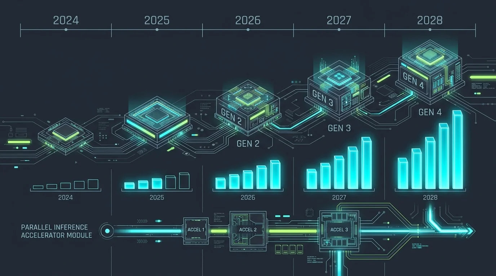
Rubin R100/Vera Rubin NVL72 항목은 NVIDIA 공식 스펙 페이지로 직접 확인했습니다(위 "Vera Rubin 플랫폼" 절 참고). H100/H200/B200/B300과 Rubin Ultra/Feynman은 GTC 2025/2026 발표 및 Wccftech·Tom's Hardware·SemiAnalysis 보도를 종합한 3rd-party 콘텐츠(reddit, tech-insider.org, thundercompute.com, vrlatech.com) 기반으로, 여러 독립 소스 간 수치가 일치하는 것만 확인했습니다. 특히 Rubin Ultra(2027년 하반기 예정, Kyber 랙, GPU당 NVFP4 약 100 PFLOPS·HBM4e 1TB·대역폭 약 32TB/s 보도)와 Feynman(2028년, LP40 메모리·Rosa CPU·BlueField-5 언급)은 NVIDIA가 세부 스펙을 아직 공식 공개하지 않아 3rd-party 재구성 그대로입니다.
10. 참고 자료
직접 fetch해서 원문/원본 데이터를 확인한 자료 (신뢰도 높음):
- Qwen/Qwen3.6-27B (Hugging Face 모델 카드)
- deepseek-ai/DeepSeek-V4-Flash (Hugging Face 모델 카드)
- zai-org/GLM-5.2 (Hugging Face 모델 카드 + config.json 원본)
- GLM-5: from Vibe Coding to Agentic Engineering (arXiv:2602.15763)
- TurboQuant: Online Vector Quantization with Near-optimal Distortion Rate (arXiv:2504.19874, Google Research)
- Kimi K3's 2.8T-Parameter Launch Puts AI Capex Story on Trial (TFTC, 기사 전문 확인)
- Moonshot AI Releases Kimi K3: A 2.8 Trillion Parameter Open MoE Model With Kimi Delta Attention and 1M Context (marktechpost, 기사 전문 확인, 2026-07-16) — Moonshot 공식 블로그(
kimi.com/blog/kimi-k3) 내용을 인용 보도. Per-Head Muon, SiTU, Gated MLA, QAT 기반 MXFP4/MXFP8 네이티브 서빙, 64+ 가속기 권장 구성 등 확인 - google/gemma-4-31B (Hugging Face 모델 카드 + config.json 원본) — Dense 구조(
enable_moe_block: false) 직접 확인 - poolside/Laguna-S-2.1 (Hugging Face, config.json 원본) — 총 118B(HF 페이지 명시), 재계산한 활성 파라미터 ~8.4B로 신고치(8B)와 근접
- Motif-Technologies/Motif-3-Beta (Hugging Face, config.json 원본) — 재계산 총 파라미터 ~321B로 신고치(314B)와 근접
- tencent/Hy3-preview (Hugging Face, config.json 원본) — 재계산 총 ~295B/활성 ~21B로 신고치와 정확히 일치
- MiniMaxAI/MiniMax-M3 (Hugging Face, config.json 원본) — 재계산 총 파라미터 ~425B로 신고치(428B)와 근접
- mistralai/Mistral-Medium-3.5-128B (Hugging Face, config.json 원본) — 재계산 텍스트 백본 ~125B로 신고치(128B Dense)와 근접
- deepseek-ai/DeepSeek-V4-Pro (Hugging Face, config.json 원본) — 재계산 총 파라미터
1.551.6T로 신고치(1.6T)와 근접 - Introducing NVFP4 for Efficient and Accurate Low-Precision Inference (NVIDIA Technical Blog, 기사 전문 확인) — NVFP4(블록 16, E4M3 스케일) vs MXFP4(블록 32, E8M0 스케일) 공식 비교표, NVFP4 메모리 절감(FP16 대비 3.5배, FP8 대비 1.8배) 확인
- NVIDIA Vera Rubin NVL72 공식 스펙 페이지 (nvidia.com, 직접 fetch 확인) — Rubin GPU 1개(HBM4 288GB/22TB/s, NVFP4 추론 50 PFLOPS)부터 NVL72 랙(HBM4 20.7TB/1,580TB/s, NVFP4 추론 3,600 PFLOPS)까지 공식 스펙표 확인. "Preliminary information" 각주 있음
- NVIDIA GB300 NVL72 공식 스펙 페이지 (nvidia.com, 직접 fetch 확인) — 랙 단위 수치(NVLink 130TB/s, FP4 1,440 PFLOPS sparse)는 공식 확인, 개별 B300 GPU의 288GB/8TB/s는 이 페이지에 없어 여전히 3rd-party(Supermicro 데이터시트 등) 소스
검색 스니펫/2차 소스로만 확인한 자료 (교차검증 약함, 원문 미확인):
- QuaRot: Outlier-Free 4-Bit Inference in Rotated LLMs (arXiv:2404.00456) — abstract만 확인, 잘 알려진 논문이라 신뢰도는 높은 편
- Unsloth Dynamic 2.0 GGUFs 공식 문서 — 검색 스니펫으로만 확인
- Kimi K3 활성 파라미터 정확한 수치 —
kimi.com/blog/kimi-k3(403),huggingface.co/moonshotai/Kimi-K3(401) 둘 다 여전히 직접 접근 실패(2026-07-22 재확인). 가중치·기술 리포트가 2026-07-27 공개되면 재검증 필요. 아키텍처 구성요소(KDA, Attention Residuals, Stable LatentMoE, Per-Head Muon, SiTU, Gated MLA)는 marktechpost의 Moonshot 블로그 인용 보도로 확인했으나, 원문 블로그 직접 확인은 아직 못함 - NVIDIA B300(개별 GPU) 스펙(288GB HBM3e, 8TB/s) — Supermicro 데이터시트·Spheron 등 3rd-party 기반. NVIDIA 공식 페이지(gb300-nvl72)에는 랙 단위 수치만 있고 개별 GPU 스펙시트 미확인
- Rubin Ultra(2027 하반기, Kyber 랙)·Feynman(2028, LP40/Rosa CPU) 세부 스펙 — reddit, tech-insider.org, thundercompute.com, vrlatech.com 종합. GTC 발표 자체는 실제 있었으나 트랜지스터 수 등 세부 수치는 NVIDIA 공식 자료로 재확인 필요. (NVFP4/MXFP4 블록 크기와 Vera Rubin NVL72/Rubin GPU 스펙은 이번 세션에 NVIDIA 공식 페이지로 확인 완료 — 참고 자료 섹션 참고)
- Qwen3.8-Max(2.4T, 프리뷰, 가중치 미공개) — kie.ai, aitoolsreview.co.uk, coursiv.io 검색 스니펫으로 확인. Alibaba 자체 발표 수치이며 독립 검증 불가(MoE 여부·활성 파라미터·정확한 컨텍스트 길이 모두 미공개)
- Meta Llama 4(Scout 109B/17B 활성, Maverick 400B/17B 활성, 2025-04 출시, 2026년 모델이 아니라 표에서 제외) — reddit, explainx.ai 검색 스니펫으로 확인. Meta가 이후 프론티어 모델을 "Muse"라는 비공개 브랜드로 옮겼다는 보도(theplanettools.ai, tech-insider.org)는 검색 스니펫 수준으로만 확인, 원문 미확인
위 자료는 2026년 7월 22일 기준으로 확인했습니다.
2026-07-22 재검증 노트: 문서 병합 후 전체 수치·주장을 웹 검색으로 재교차검증했습니다. 대부분(Kimi K3 스펙, DeepSeek V4 아키텍처·가격, GLM-5.2 파라미터, 모델 표의 나머지 항목들, AI Diffusion Rule 폐기, Huawei Ascend, TurboQuant/QuaRot 논문, NVFP4/MXFP4 스펙, Vera Rubin NVL72 공식 수치, Groq 3 LPU 통합 등)는 복수 출처로 재확인됐습니다. 이 과정에서 발견해 본문에 반영한 수정 사항:
- 나스닥 선물 하락폭(1.7%)은 매체별로 1.0~1.5%로도 보도돼 편차가 있음을 명시
- Kimi K3의 "K2 대비 2.5배 스케일링 효율"은 2차 보도에서 재확인되지 않아 미검증으로 표시
- Groq 3 LPU의 "매출 기회 10배" 표현을 실제 확인된 문구인 "토큰당 비용 최대 10배 절감"으로 정정
- RTX 5090 국내 출시가(369만원→320만
369만원 범위)와 현재가(700만원대→700만800만원대) 범위 보정 - GPT-OSS MXFP4가 암페어에서 구동될 때는 네이티브 가속이 아닌 에뮬레이션 방식임을 명시
- B200 HBM3e 용량(192GB)에 대해 일부 3rd-party 소스가 180GB로 표기하는 불일치 존재 명시
- Vera Rubin Superchip 행과 NVL72 CPU 코어 수(3,168개)가 공식 페이지의 별도 명시 수치가 아니라 이 문서에서 유도한 값임을 명시 아직 미검증/확인 불가로 남은 항목: Kimi K3의 "K2 대비 2.5배" 수치, DeepSeek V4 API 가격의 1차 출처(api-docs.deepseek.com) 직접 열람.
[^tftc]: Kimi K3's 2.8T-Parameter Launch Puts AI Capex Story on Trial (TFTC) — 기사 전문 확인. 2026-07-22 재검증 시 CNBC 등 타 매체는 나스닥 선물 하락폭을 1.01.5%로 보도해 TFTC의 1.7%와 소폭 차이가 있었으나, NVDA 2%대 하락과 반도체 섹터 누적 시총 3.3조 달러 증발은 Yahoo Finance 등 복수 매체에서 동일 수치로 교차확인됨.
[^gpu-price]: RTX 5090은 국내 출시가가 약 320만369만원(소스별 편차 있음)에서 현재(2026년 중순) 700만800만원대로 뛰었습니다(글로벌이코노믹 g-enews.com 2025-01-07, 네이버 블로그 2026-02, ASUS 등 리테일러 799만819만원대 검색 스니펫으로 확인, 직접 fetch는 못함. 참고로 미국 MSRP $1,999 자체는 변동 없고, 국내 가격 급등은 관세·환율·리테일 마진이 추가 요인으로 추정). RTX PRO 6000 Blackwell(워크스테이션용, 96GB GDDR7)은 출시가 $8,565에서 현재 $13,250 수준으로 뛰었습니다(thundercompute.com 블로그 검색 스니펫으로 확인, 직접 fetch는 못함. NVLink 미지원(PCIe Gen5 x16) 등 스펙은 reddit(r/nvidia) 유출 정보와 일치). AI 데이터센터가 메모리(HBM/DRAM) 생산능력을 흡수해 GDDR7 원가 자체가 뛴 공급 측 요인이 메인이고(techpowerup.com 기사, reddit 인용, 확인), 여기에 로컬 AI 추론용으로 대용량 VRAM GPU를 찾는 수요가 게이머 수요 위에 얹힌 것도 보조 요인으로 꼽힙니다(r/LocalLLaMA 커뮤니티 글로만 정성적 확인, 정량 데이터 없음, 검색 스니펫 수준).
[^model-table]: 2025년에 나온 Meta Llama 4, xAI Grok은 2026년 모델이 아니라 표에서 제외. 오픈 웨이트 모델은 Hugging Face config.json을 직접 fetch해서 총 파라미터를 재계산·교차검증했고, 전부 신고치와 근접한 범위로 확인됨. 검증 방법과 그 외 세부 사항(모델별 출처, 신뢰도, 제외 근거 등)은 참고 자료 섹션 참고.
[^memory-calc]: GLM-5.2(744B)를 FP8로 서빙하려면 단순 계산으로 약 744GB의 메모리가 필요합니다. 회사 추론 머신의 대부분을 차지하는 NVIDIA H200 그래픽카드는 한 장에 141GB의 HBM3e 메모리를 탑재하고 있습니다. 네 장이면 564GB라 부족하고, 여덟 장이면 1,128GB가 되므로 GLM-5.2 FP8 모델을 서빙할 수 있습니다. Kimi K3(2.8T)는 SFT 단계부터 QAT를 거쳐 가중치를 MXFP4(4비트, 파라미터당 0.5바이트)로 네이티브 배포합니다. 하지만 MXFP4/NVFP4 네이티브 가속은 블랙웰부터 지원되고(이 문서 상단의 "가속기 세대별 네이티브 정밀도" 참고), 호퍼(H200)에는 FP4 텐서코어가 없어 MXFP4 가중치를 그대로 로드해 돌릴 수 없습니다. 따라서 H200에서는 FP8로 변환해 서빙해야 하며, 이때 필요한 메모리는 파라미터당 1바이트인 약 2.8TB로, H200 8장(1,128GB)은 물론 16장(2,256GB)도 부족하고 32장(약 4.5TB)이 있어야 합니다. 반면 B300(Blackwell Ultra)은 장당 288GB이고 MXFP4/NVFP4를 네이티브 가속하므로, 저장 용량만 필요한 약 1.4TB 기준 8장(2,304GB, 약 2.3TB)이면 서빙할 수 있습니다(KV캐시 등 오버헤드는 별도).
[^kv-formula]: 공식 맨 앞의 2는 K와 V 두 개를 저장하기 때문입니다.
[^b200-mem]: NVIDIA GTC 2024 발표 기준 공식 스펙은 HBM3e 192GB/8TB/s이지만, RunPod·Jarvislabs 등 일부 GPU 렌탈 업체 문서는 180GB로 표기하고 있어(2026-07-22 교차검증 시 확인) 출처 간 소폭 불일치가 있습니다.
[^sft]: 사전학습(Pretraining)으로 "다음 토큰 맞추기"만 학습한 베이스 모델을, (질문, 좋은 답변) 형태의 예시 데이터로 추가 학습시켜 지시를 따르는 대화형 모델로 다듬는 단계입니다.
[^qat]: 모델을 학습하는 동안 저비트 양자화로 인한 오차까지 감안해서 가중치를 조정하는 방식입니다. 학습이 끝난 뒤에 양자화하는 사후 양자화(PTQ, Post-Training Quantization)보다 품질 저하가 작습니다.
[^ai-sovereign]: 2026년 7월 로이터 보도에 따르면 중국 상무부는 Alibaba·ByteDance·Z.ai(Zhipu)와 만나 최신 AI 모델(미공개 오픈웨이트 포함)의 해외 접근 제한을 논의했습니다(아직 확정 규제는 아님). 같은 시기 미국도 특정 프론티어 모델의 배포를 국가안보 사유로 일시 중단·제한한 사례가 있습니다. 즉 GPU 수출 규제뿐 아니라 모델(가중치) 자체의 국외 유출 통제도 논의 대상이 되고 있습니다.
[^kv-cache-opt]: KV캐시를 줄이는 최적화 기술들이 다양하게 존재해서, 컨텍스트가 길어져도 무작정 캐시가 불어나는 상황보다는 낫습니다. 자세한 내용은 아키텍처 섹션에서 다룹니다. [^spec-decoding]: 정확히는 "완전히 순차적"이라는 말에도 예외가 있습니다. 투기적 디코딩(speculative decoding)은 작고 빠른 보조 모델(draft model)이 앞으로 나올 여러 토큰을 미리 추측해서 한꺼번에 제시하고, 본 모델이 그 추측들을 병렬로(한 번의 메모리 읽기로) 검증합니다. 추측이 맞으면 여러 토큰을 한 스텝에 확정할 수 있어 디코딩이 빨라지고, 틀리면 그 지점부터 다시 순차 생성으로 돌아갑니다. 즉 매 토큰마다 전체 파라미터를 다시 읽어야 한다는 제약 자체는 그대로지만, 한 번 읽을 때 여러 토큰 분량을 뽑아낼 수 있어 실효 처리량이 늘어나는 방식입니다. [^mem-bandwidth]: 여기서 말하는 메모리 대역폭은 CPU 캐시와는 무관합니다. 추론 연산 자체가 GPU에서 일어나므로, 정확히는 GPU의 HBM(VRAM)과 GPU 연산 코어(Tensor Core/SM) 사이에서 데이터를 주고받는 속도를 가리킵니다. 이 문서 앞부분의 GPU 로드맵에 나온 대역폭 수치(예: H200 HBM3e 4.8TB/s)가 바로 이 값입니다. [^moe-history]: MoE 자체는 R1 이전에도 Mixtral, GPT-4 등에서 쓰이던 구조지만, "적은 인프라 투자로도 프론티어급 성능이 나온다"는 충격과 함께 R1을 통해 일반 대중에게까지 널리 알려졌습니다.
[^ds-v4-pricing]: DeepSeek 공식 API 가격(2026년 상반기 기준, api-docs.deepseek.com/quick_start/pricing). 2025년 말 발표된 프로모션 할인가(V4 Pro 캐시 히트 $0.003625보다 더 낮은 $0.0145 등 표기가 커뮤니티에 혼재)가 있어 시점에 따라 소폭 다를 수 있으나, "캐시 히트가 출력 대비 두 자릿수~세 자릿수 배 저렴하다"는 비율 자체는 여러 소스에서 일관되게 확인됩니다. 참고로 시간대별 성수기(피크) 요금은 이 값의 약 2배입니다.